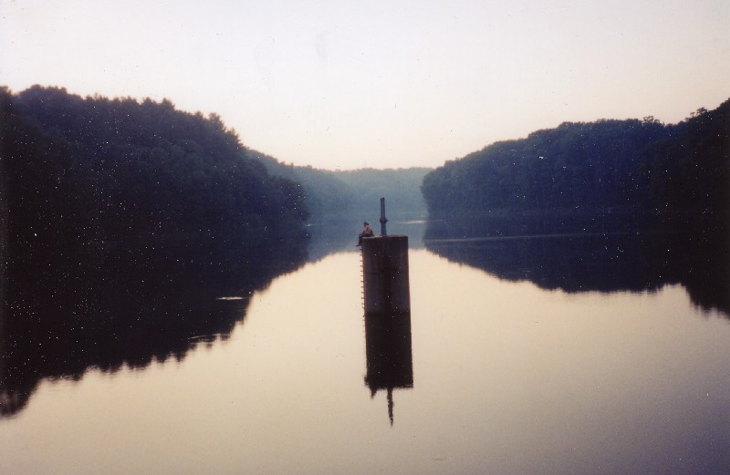

North of Woodsfield on State Route 800 is the ODNR park which contains Monroe Lake, one of the many created by engineers in lake-deprived Ohio. Though the southeastern part of the state is technically "unglaciated," it lacks bodies of water almost as badly as the northern flatland. They simply dammed the creek here in the mid-'50s and let it fill up to proper size, a process which took two years. Now you can swim, dive, go fishing, or cruise your boat around the lake, which is stocked with largemouth bass, channel and brown bullhead catfish, and bluegills.
The lake is surrounded by the Monroe Lake Wildlife Area, a 1,300-acre nature preserve which spreads over both sides of Route 800. Aside from the signs showing you to the entrance, the nature preserve is indistinguishable from any of the other vast patches of wilderness in Monroe County. Woodsfield, with less than 3,000 residents, is something of an oasis in the middle of one of the least-populated counties in the state.
Monroe Lake is haunted, particularly the southern end, where the dam and the beach are located. The beach is a strip of imported sand, riddled with rocks and sticks and other clutter which reminds you you're really more in the middle of the woods than at a swimming beach.
But people do swim here, as evidenced by the giant concrete diving island you see above. It pokes up out of the middle of this end of the lake, complete with metal rungs set into the side so you can climb up. People sit on it and sunbathe, talk, make out.

One of the ghost tales at Monroe Lake is that you can see a lone figure sitting on top of the diving island, always out of the corner of your eye, and always at dusk. I visited at dusk, and there were two living people on the island, so I didn't have the chance to test this out.
But the main ghost story here is that a child--or maybe more than one child--drowned in the lake some years ago while out swimming. Most often people recall it being a little girl.
Now the little girl's ghost haunts Monroe Lake. She swam out beyond her depth and couldn't make it back, apparently; the chilling sounds of her desperate cries and violent splashing are often heard across the otherwise utterly still and glassy surface of the water.
It might also have been a boy. I have yet to unearth an article or hear from anyone who remembers the particular drowning that gave birth to this legend, so I'm not really able to be specific. (If you can help, please contact me.) But Monroe Lake has been known in Woodsfield as haunted for some time.
During 2003 the lake was closed down for a time while the dam was rebuilt and made more sturdy. Previously there had been some concern. Maybe the concrete island was added as a kind of central life preserver, in an effort to prevent drownings like the one that gave Monroe Lake its haunted reputation.
ODNR: Monroe Lake Wildlife Area (PDF)
Monroe County Tourism: Monroe Lake and Wildlife Area
Back